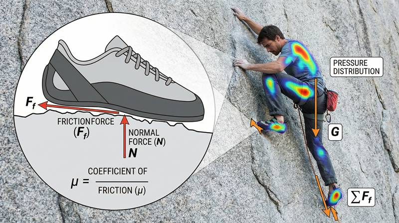
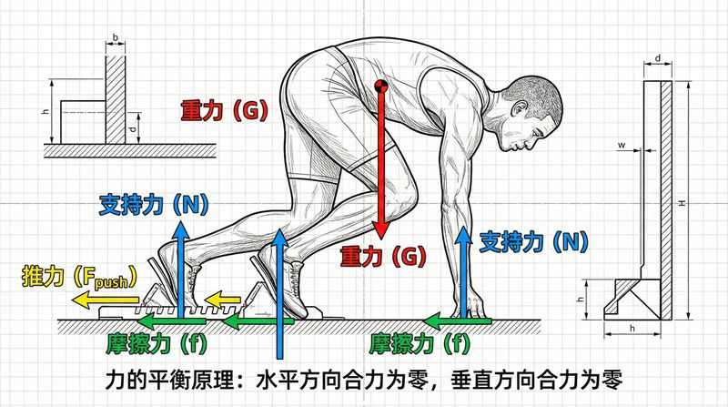

返回课程列表
第六课
振动基础
运动节奏与周期性运动的振动分析
⏱️ 约35分钟
跑步是典型的周期运动，心率是生理振荡，运动节奏是训练的核心。理解振动规律有助于找到最佳运动频率。
跑步的周期运动
跑步是双腿交替支撑的周期运动。步频（每分钟步数）和步幅共同决定速度。精英马拉松运动员的步频约180步/分钟。

跑步节奏的优化
跑步周期运动的关键参数：
- 最佳步频：约180步/分钟，对应周期约0.33秒
- 步频与效率：过低的步频增加垂直振幅，浪费能量
- 共振频率：鞋底和地面的弹性系统有固有频率，匹配时效率最高
- 节拍器训练：用音乐节拍引导步频，180BPM的歌曲最适合跑步
运动中的共振与避振
运动装备和人体都有固有频率。好的运动鞋能避免有害共振，保护关节；而弹簧跳板则利用共振放大弹跳高度。

运动装备的振动设计
振动学在运动装备中的应用：
- 跑鞋减震：泡沫中底吸收冲击振动，减少膝关节负荷
- 网球拍减振器：安装在拍线上吸收击球振动，减少网球肘风险
- 自行车避震：前叉和后避震器过滤路面振动，提高骑行舒适性
- 跳水跳板：利用共振放大弹跳高度，运动员需要找到板的节奏